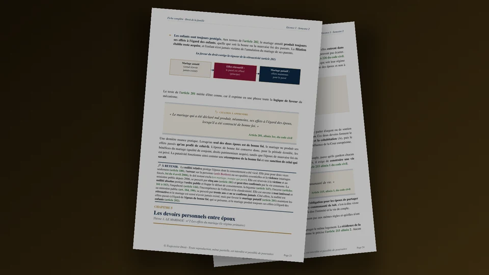

La fiche de révision de droit de la famille L1
La fiche de révision de droit de la famille L1 suit les cinq parties du second semestre, du mariage jusqu'aux effets de la filiation. Elle te donne les articles du Code civil à connaître, les délais à retenir, sept décisions de jurisprudence et un cas pratique corrigé, dans l'ordre où tu les révises.
Le droit de la famille se révise autrement que le reste du droit civil. Chaque partie repose sur quelques articles et délais que le correcteur attend avec leur numéro exact, par exemple l'âge du mariage, les quatre cas de divorce ou le délai d'un an de l'altération du lien conjugal. Un seul chiffre oublié peut donc te coûter les points d'une question entière.
Cette page te sert de fiche de départ. Tu y vois le programme d'un coup d'œil, puis tu vérifies chaque point dans ton Code civil. Pour organiser tes semaines de travail, le guide pour réviser le droit de la famille en L1 détaille la méthode, alors que cette fiche réunit le contenu à retenir. Tu trouveras aussi la vue d'ensemble de la matière sur la page droit de la famille L1.

Fiche complète de droit de la famille L1
Toute la matière du semestre en 148 pages
La fiche complète reprend les 22 chapitres du semestre, des fiançailles à l'obligation alimentaire, avec les articles, les arrêts et les schémas de chaque thème. Le cours complet de 218 pages développe chaque notion avec des exemples.
- Les cinq parties du semestre en PDF
- Articles et arrêts de chaque chapitre
- Téléchargement immédiat
Paiement sécurisé. Tes fichiers sont envoyés par email dès la confirmation.
Quel est le programme de droit de la famille en L1 ?
Le second semestre de L1 se découpe en cinq parties. Les intitulés varient un peu d'une fac à l'autre, et ce découpage suit celui de la fiche complète.
Le mariage (partie 1)
Tu commences par les fiançailles, qui ne t'obligent pas à te marier, puis par les conditions du mariage. Les conditions de fond portent sur l'âge, le consentement et les empêchements (art. 144 à 147 et 161 à 163). Les conditions de forme portent sur la publication, l'audition des futurs époux et la célébration devant l'officier d'état civil. Viennent ensuite les nullités, les devoirs entre époux (art. 212 et 215), la contribution aux charges avec la solidarité pour les dettes ménagères (art. 214 et 220) et la protection du logement de la famille (art. 215, alinéa 3).
Les couples non mariés (partie 2)
Le concubinage est une union de fait, définie par l'article 515-8, qui n'entraîne aucun statut légal. Le PACS, en revanche, est un contrat conclu par deux majeurs (art. 515-1), enregistré à la mairie, qui sépare les patrimoines par défaut (art. 515-5) et se dissout sans juge (art. 515-7). La comparaison avec le mariage sert de base à de nombreux sujets. Le tableau plus bas résume donc les différences à retenir.
La désunion (partie 3)
Le divorce occupe le plus de place. Tu apprends les quatre cas de l'article 229, la procédure réformée en 2021, puis les conséquences du divorce, à savoir le nom, la date d'effet entre époux et la prestation compensatoire. La séparation de corps termine cette partie.
L'établissement de la filiation (partie 4)
La filiation est le lien juridique entre un parent et son enfant. Tu étudies les modes d'établissement de l'article 310-1 et les actions pour la contester ou la rechercher. Viennent ensuite la PMA et la gestation pour autrui, puis l'adoption sous ses deux formes.
Les effets de la filiation (partie 5)
La dernière partie traite de l'autorité parentale (art. 371-1 et suivants), de l'obligation alimentaire (art. 205 et suivants) et du nom de l'enfant (art. 311-21). Selon ta fac, les régimes matrimoniaux s'ajoutent au programme, et dans ce cas la page sur le régime matrimonial légal te donne les bases.
Quels articles du Code civil connaître en droit de la famille ?
Vingt et une références reviennent dans presque tous les sujets. Cite-les avec leur numéro, car un raisonnement appuyé sur le texte convainc davantage le correcteur.
| Art. 143 | Le mariage est contracté par deux personnes de sexe différent ou de même sexe. |
|---|---|
| Art. 144 et 145 | Le mariage ne peut être contracté avant dix-huit ans révolus (art. 144). Le procureur de la République peut accorder une dispense d'âge pour des motifs graves (art. 145). |
| Art. 146 | Il n'y a pas de mariage, lorsqu'il n'y a point de consentement. |
| Art. 180, 181 et 184 | Un mariage conclu sous la contrainte, ou avec une erreur sur la personne ou sur ses qualités essentielles, peut être annulé dans un délai de cinq ans à compter du mariage (art. 180 et 181). Les mariages conclus avant l'âge légal, sans consentement, avec une personne déjà mariée ou entre parents trop proches restent attaquables pendant trente ans (art. 184). |
| Art. 201 et 202 | Le mariage annulé produit néanmoins ses effets à l'égard des époux de bonne foi, ou de celui des deux qui l'est seul (art. 201), et à l'égard des enfants, même si aucun des époux n'est de bonne foi (art. 202). C'est le mariage putatif. |
| Art. 212 | Les époux se doivent mutuellement respect, fidélité, secours, assistance. |
| Art. 215 | Les époux s'obligent à une communauté de vie (alinéa 1). Aucun des deux ne peut disposer seul des droits qui assurent le logement de la famille. Celui qui n'a pas consenti peut demander l'annulation de l'acte dans l'année à partir du jour où il l'a connu, et jamais plus d'un an après la dissolution du régime matrimonial (alinéa 3). |
| Art. 220 | Chaque époux peut passer seul les contrats qui ont pour objet l'entretien du ménage ou l'éducation des enfants, et la dette oblige l'autre solidairement. La solidarité disparaît pour les dépenses manifestement excessives. |
| Art. 515-1 et 515-8 | Le PACS est un contrat conclu par deux personnes physiques majeures pour organiser leur vie commune (art. 515-1). Le concubinage est une union de fait, caractérisée par une vie commune stable et continue entre deux personnes qui vivent en couple (art. 515-8). |
| Art. 229 | Le divorce peut être prononcé dans quatre cas, le consentement mutuel, l'acceptation du principe de la rupture, l'altération définitive du lien conjugal et la faute. |
| Art. 238 | Le lien conjugal est définitivement altéré lorsque les époux vivent séparés depuis un an au moment de la demande en divorce. |
| Art. 242 | Le divorce pour faute suppose des faits constitutifs d'une violation grave ou renouvelée des devoirs et obligations du mariage, imputables au conjoint, qui rendent intolérable le maintien de la vie commune. |
| Art. 270 | Le divorce met fin au devoir de secours. Un époux peut devoir une prestation compensatoire, destinée à compenser la disparité que la rupture crée dans les conditions de vie respectives. |
| Art. 271 | La prestation compensatoire est fixée selon les besoins de l'époux qui la reçoit et les ressources de l'autre, en tenant compte de la situation au moment du divorce et de son évolution prévisible. |
| Art. 310-1 et 312 | La filiation s'établit par l'effet de la loi, par la reconnaissance volontaire ou par la possession d'état constatée par un acte de notoriété (art. 310-1). L'enfant conçu ou né pendant le mariage a pour père le mari (art. 312). |
| Art. 343 | L'adoption peut être demandée par deux époux non séparés de corps, deux partenaires de PACS ou deux concubins, qui prouvent une communauté de vie d'au moins un an ou ont tous les deux plus de vingt-six ans. Une personne seule de plus de vingt-six ans peut aussi adopter (art. 343-1). |
| Art. 371-1 | L'autorité parentale est un ensemble de droits et de devoirs qui a pour finalité l'intérêt de l'enfant. Elle appartient aux parents jusqu'à la majorité ou l'émancipation de l'enfant. |
| Art. 372 | Les père et mère exercent en commun l'autorité parentale. |
| Art. 373-2 | La séparation des parents ne change pas les règles de l'exercice de l'autorité parentale. Un changement de résidence qui modifie les modalités de cet exercice doit être annoncé à l'autre parent à l'avance. |
| Art. 378 | Depuis la loi du 18 mars 2024, la juridiction pénale ordonne le retrait total de l'autorité parentale, sauf décision contraire spécialement motivée, quand un parent est condamné pour un crime ou une agression sexuelle incestueuse sur son enfant, ou pour un crime sur l'autre parent. |
| Art. 205 et 208 | Les enfants doivent des aliments à leurs père et mère dans le besoin (art. 205). Les aliments sont accordés dans la proportion du besoin de celui qui les réclame et de la fortune de celui qui les doit (art. 208). |
Mariage, PACS ou concubinage, que retenir ?
Les trois formes de couple se comparent sur six points. Tu peux recopier ce tableau sur ta fiche et le compléter avec tes propres exemples.
| La formation | Mariage : célébration devant l'officier d'état civil, dix-huit ans minimum (art. 144). PACS : déclaration conjointe à la mairie ou convention devant notaire, enregistrement, deux majeurs (art. 515-1 et 515-3). Concubinage : aucune formalité, une vie commune stable suffit (art. 515-8). |
|---|---|
| Les obligations | Mariage : respect, fidélité, secours, assistance et communauté de vie (art. 212 et 215). PACS : vie commune, aide matérielle et assistance réciproques (art. 515-4), sans obligation de fidélité dans le texte. Concubinage : aucune obligation légale. |
| Les dettes ménagères | Mariage : solidarité (art. 220). PACS : solidarité pour les dettes de la vie courante (art. 515-4). Concubinage : aucune solidarité légale. |
| La rupture | Mariage : divorce, selon les quatre cas de l'article 229. PACS : décès, mariage, déclaration conjointe ou décision unilatérale signifiée par huissier, sans juge (art. 515-7). Concubinage : rupture libre, sans formalité. |
| Le bail du logement | Le droit au bail appartient aux deux époux de plein droit. Il appartient aux deux partenaires de PACS sur leur demande conjointe. Les concubins ne sont pas visés (art. 1751). |
| L'enfant | La présomption de paternité de l'article 312 joue seulement dans le mariage. Dans le PACS et le concubinage, la filiation paternelle s'établit par la reconnaissance ou par les autres modes de l'article 310-1. |
Pour pousser la comparaison, l'article sur les différences entre PACS et mariage et celui sur la rupture du concubinage t'apportent des exemples concrets.
Quels sont les quatre cas de divorce ?
L'article 229 du Code civil les énumère, et tu dois savoir pour chacun son fondement, sa procédure et son délai.
| Consentement mutuel (art. 229-1) | Les époux signent une convention sous signature privée contresignée par leurs avocats, déposée chez un notaire. Ensuite, chacun reçoit le projet par lettre recommandée, et la signature ne peut intervenir avant un délai de réflexion de quinze jours (art. 229-4). La voie de l'acte d'avocat est fermée si un enfant mineur demande à être entendu par le juge ou si un époux est placé sous un régime de protection (art. 229-2). Le consentement mutuel passe alors par le juge, qui homologue la convention (art. 232). |
|---|---|
| Acceptation du principe de la rupture (art. 233) | Les époux acceptent le principe du divorce sans discuter les faits qui l'expliquent. L'acceptation ne peut plus être retirée, même en appel. |
| Altération définitive du lien conjugal (art. 237 et 238) | Un seul époux suffit pour la demander, à condition que les époux vivent séparés depuis un an au moment de la demande. Ce délai a été réduit de deux ans à un an pour les demandes présentées depuis le 1er janvier 2021. |
| Faute (art. 242) | Le demandeur prouve une violation grave ou renouvelée des devoirs du mariage qui rend intolérable le maintien de la vie commune. Une réconciliation postérieure aux faits empêche de les invoquer (art. 244). Si la faute et l'altération sont demandées en même temps, le juge examine d'abord la faute (art. 246). |
Une fois le divorce prononcé, le mariage est dissous à la date où la décision prend force de chose jugée, ou à la date où la convention d'avocats acquiert force exécutoire (art. 260). Entre les époux, les effets du divorce sur leurs biens remontent en principe à la date de la demande (art. 262-1). Chacun perd ensuite l'usage du nom de son conjoint, sauf accord de l'autre ou autorisation du juge (art. 264). Enfin, la prestation compensatoire se verse en principe sous forme de capital, et le juge ne l'accorde sous forme de rente viagère qu'à titre exceptionnel (art. 274 et 276). Le détail se trouve dans l'article sur la prestation compensatoire.
Comment s'établit et se conteste la filiation ?
Depuis l'ordonnance du 4 juillet 2005, le droit de la filiation ne distingue plus les enfants selon que leurs parents sont mariés ou non. Les modes d'établissement et les délais d'action sont les deux points à maîtriser dans cette partie.
Établir la filiation
Pour la mère, la filiation résulte de son nom dans l'acte de naissance de l'enfant (art. 311-25). Pour le père marié, l'article 312 le désigne comme père de l'enfant conçu ou né pendant le mariage. Un père non marié, en revanche, établit la filiation par la reconnaissance (art. 316). Pour un couple de femmes qui recourt à une PMA, la reconnaissance conjointe établit la filiation à l'égard des deux mères (art. 342-11). Enfin, la possession d'état se constate par un acte de notoriété que délivre un notaire, sur les déclarations d'au moins trois témoins, et que tu peux demander dans les cinq ans de la fin de la possession d'état ou du décès du parent prétendu (art. 317).
Contester la filiation
Les actions relatives à la filiation se prescrivent par dix ans, et ce délai est suspendu pendant la minorité de l'enfant (art. 321). Quand la possession d'état est conforme au titre, seuls l'enfant, l'un de ses parents ou celui qui se prétend le parent véritable peuvent agir, dans les cinq ans à compter du jour où la possession d'état a cessé ou du décès du parent dont la filiation est contestée (art. 333). En outre, une possession d'état conforme qui a duré au moins cinq ans interdit toute contestation, sauf celle du ministère public, quand elle a duré au moins cinq ans depuis la naissance ou la reconnaissance. À l'inverse, sans possession d'état conforme, toute personne intéressée peut contester (art. 334).
PMA et adoption
En cas de PMA avec un tiers donneur, aucun lien de filiation ne peut être établi entre le donneur et l'enfant (art. 342-9), et le consentement donné devant notaire interdit en principe toute action en contestation (art. 342-10). Par ailleurs, l'adoption plénière concerne un enfant de moins de quinze ans accueilli depuis au moins six mois (art. 345). Elle remplace la filiation d'origine (art. 356) et reste irrévocable (art. 359). En revanche, l'adoption simple s'ajoute à la filiation d'origine (art. 360). Cet effet additif figure à l'article 360 depuis la renumérotation du 1er janvier 2023, alors que d'anciens cours le citent sous l'ancien numéro 364.
Quels arrêts connaître en droit de la famille ?
Sept décisions couvrent le couple, la filiation et le divorce. Pour chacune, note sur ta fiche les faits en une phrase, la solution et ce qu'elle a changé.
Bouvier · Cass. civ., 30 mai 1838
Une promesse de mariage est nulle, parce que chacun doit rester libre de se marier ou non. Les fiançailles ne forcent donc personne à passer devant le maire. Aujourd'hui, la rupture des fiançailles ouvre droit à réparation seulement quand ses circonstances sont elles-mêmes fautives, car la brutalité de la rupture ne suffit pas à engager la responsabilité (Civ. 1re, 4 janvier 1995, n° 92-21.767).
Appietto · Civ. 1re, 20 novembre 1963
Le mariage est nul, faute de consentement, quand les époux n'ont accepté la cérémonie que pour atteindre un résultat étranger à l'union matrimoniale. Dans l'affaire jugée, le mariage restait pourtant valable, car les époux avaient seulement voulu limiter les effets légaux du mariage et donner à leur enfant commun la qualité d'enfant légitime. Tu en trouves le détail dans l'arrêt Appietto expliqué.
Dangereux · Ch. mixte, 27 février 1970
Une concubine peut demander réparation du préjudice causé par la mort accidentelle de son compagnon. La cour d'appel avait exigé un lien de droit entre eux, et la Cour de cassation a censuré cette condition. La solution s'appuie aujourd'hui sur l'article 1240 du Code civil.
Galopin · Ass. plén., 29 octobre 2004
Un legs universel consenti à la compagne avec laquelle le défunt entretenait une relation adultère n'est pas nul pour cause contraire aux bonnes mœurs. La Cour abandonne ainsi le contrôle des mobiles dans les libéralités entre concubins.
Civ. 1re, 28 mars 2000, n° 98-12.806
En matière de filiation, l'expertise biologique est de droit, sauf s'il existe un motif légitime de ne pas y procéder. Cette décision sert de base à la preuve scientifique de la filiation devant le juge.
Mennesson et Labassée c. France · CEDH, 26 juin 2014
Refuser toute reconnaissance du lien de filiation avec le père biologique d'enfants nés d'une gestation pour autrui à l'étranger porte atteinte à la vie privée de ces enfants (art. 8 de la Convention). L'assemblée plénière a ensuite admis, le 4 octobre 2019 (n° 10-19.053), la transcription de l'acte de naissance étranger, y compris à l'égard de la mère d'intention. La convention de gestation pour autrui reste nulle en droit français (art. 16-7 du Code civil).
H.W. c. France · CEDH, 23 janvier 2025
Un divorce prononcé aux torts exclusifs d'une épouse qui refusait des relations sexuelles, sur le fondement du devoir conjugal, viole le droit au respect de la vie privée garanti par l'article 8. La Cour affirme que le consentement aux relations sexuelles reste libre à l'intérieur du mariage. Cette décision concerne donc directement le divorce pour faute.
Un exemple de cas pratique en droit de la famille
Voici un mini cas pratique, corrigé selon la méthode que tu appliques à tous tes sujets. Il combine la protection du logement de la famille et le divorce.
Énoncé. Antoine possède seul un appartement, acheté avant son mariage avec Clara en 2020. Le couple y vit avec leur fille. Antoine quitte le domicile il y a quatorze mois. Six mois plus tard, il vend l'appartement à un acheteur sans prévenir Clara. Elle l'apprend aujourd'hui, par un courrier de l'acquéreur, alors qu'elle vit toujours dans les lieux avec leur fille. Clara veut obtenir l'annulation de la vente et demander le divorce.
Problèmes de droit. Un époux peut-il vendre seul le bien qui sert de logement à la famille, quand il en est le seul propriétaire ? Sur quel fondement Clara peut-elle demander le divorce, sans avoir à reprocher une faute à Antoine ?
Règles. D'après l'article 215, alinéa 3, les époux ne peuvent pas disposer l'un sans l'autre des droits qui assurent le logement de la famille. L'époux qui n'a pas consenti peut demander l'annulation de l'acte dans l'année à partir du jour où il l'a connu, et jamais plus d'un an après la dissolution du régime matrimonial. Par ailleurs, l'article 238 définit l'altération définitive du lien conjugal comme une séparation d'un an au moment de la demande. L'article 246 précise que le juge examine d'abord la faute si les deux fondements sont demandés ensemble.
Application et conclusion. L'article 215 fait partie des règles qui s'appliquent à tous les couples mariés, quel que soit leur régime matrimonial. L'appartement reste le logement de la famille, puisque Clara et leur fille y vivent encore, même si Antoine l'a quitté. Antoine, bien que seul propriétaire, a donc disposé seul d'un droit qui assure ce logement, sans le consentement de Clara. Elle peut demander l'annulation de la vente. Comme elle l'a découverte aujourd'hui, elle dispose d'un an à compter de cette découverte. Pour le divorce, les époux vivent séparés depuis quatorze mois, ce qui dépasse le délai d'un an de l'article 238. Clara peut donc invoquer l'altération définitive du lien conjugal, sans prouver aucune faute. Si Antoine demande de son côté un divorce pour faute, le juge examinera d'abord cette demande, conformément à l'article 246.
Cet exemple suit donc la méthode en quatre temps. Tu poses le problème de droit, tu énonces la règle, tu l'appliques aux faits, puis tu conclus. La méthode du cas pratique détaille chaque étape. Pour une autre situation sur le couple, la page PACS et mariage compare les deux unions avec des exemples.
Quelles erreurs coûtent le plus de points ?
Quatre erreurs reviennent copie après copie. Vérifie chacune sur ta propre fiche.
Garder l'ancien délai de deux ans pour l'altération
Depuis le 1er janvier 2021, l'article 238 exige un an de séparation au moment de la demande. Beaucoup d'étudiants écrivent encore deux ans, parce que leurs anciennes fiches datent d'avant la réforme. Ils confondent aussi la faute et l'altération, alors que le juge examine d'abord la faute quand les deux sont demandées (art. 246).
Raisonner le mariage avec le droit des contrats
L'article 180 prévoit une erreur propre au mariage, celle qui porte sur la personne ou sur ses qualités essentielles, et le délai pour agir est de cinq ans (art. 181). En revanche, l'erreur sur les qualités substantielles de la chose, issue de l'article 1132, relève des contrats. Le dol ne figure pas parmi les causes de nullité de l'article 180. Enfin, la dispense d'âge de l'article 145 exige des motifs graves.
Mélanger mariage, PACS et concubinage
La solidarité pour les dettes de la vie courante existe dans le mariage (art. 220) et dans le PACS (art. 515-4), mais les concubins n'y sont pas soumis. Pour le bail du logement, l'article 1751 vise les époux et les partenaires de PACS, et laisse les concubins de côté.
Se tromper de régime d'action en filiation
L'article 333 s'applique quand la possession d'état est conforme au titre, avec un petit nombre de personnes autorisées à agir et un délai de cinq ans. Sans possession d'état conforme, c'est l'article 334 qui s'applique, avec toute personne intéressée autorisée à agir et le délai de dix ans de l'article 321. Pour un enfant né d'une PMA avec tiers donneur, pense aussi à l'article 342-10, qui interdit en principe toute action en contestation.
Dans quel ordre réviser le droit de la famille ?
Commence par le mariage, puisque le divorce et une partie de la filiation s'appuient sur lui. Tu apprends d'abord les conditions et les nullités, ensuite les devoirs entre époux, ce qui te donne les bases pour comprendre la faute en matière de divorce. Le PACS et le concubinage viennent juste après, car la comparaison avec le mariage fixe les différences dans ta mémoire.
La filiation demande ensuite un autre effort. Tu retiens les modes d'établissement de l'article 310-1, puis les délais d'action, que le correcteur attend avec leur durée exacte. Termine par l'autorité parentale, que tu relies à la séparation des parents. Dans chaque partie, fais un tableau à trois colonnes avec la notion, l'article qui la fonde et la solution en une phrase, puis relis-le à voix haute une semaine avant l'examen. Pour t'entraîner, tu peux aussi comparer ta fiche avec celle de droit des personnes, qui précède cette matière, et avec la fiche de révision de droit civil L1 qui réunit les trois matières civilistes de l'année.
Questions fréquentes sur le droit de la famille en L1
Que faut-il réviser en droit de la famille en L1 ?
Quels sont les quatre cas de divorce ?
Quelle différence entre mariage, PACS et concubinage ?
Comment contester une filiation ?
Existe-t-il une fiche PDF de droit de la famille pour la L1 ?
Le Pack Ultra L1 S2 réunit les 22 ressources de ton second semestre de L1 pour 199 €, la fiche de droit de la famille L1 comprise. Voir le contenu du pack →